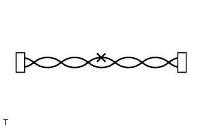
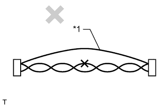
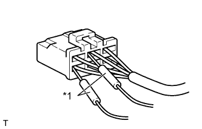

СИСТЕМА ПЕРЕДАЧИ ДАННЫХ CAN (для моделей с правосторонним рулевым управлением и системой посадки и запуска) > МЕРЫ ПРЕДОСТОРОЖНОСТИ |
| 1.МЕРЫ ПРЕДОСТОРОЖНОСТИ ПРИ ВЫПОЛНЕНИИ РАБОТ НА СИСТЕМЕ РУЛЕВОГО УПРАВЛЕНИЯ |
Соблюдайте осторожность при замене деталей. Неправильно выполненная замена может ухудшить эксплуатационные качества системы рулевого управления и привести к опасным ситуациям при поездках.
| 2.МЕРЫ ПРЕДОСТОРОЖНОСТИ ПРИ ВЫПОЛНЕНИИ РАБОТ С ПОДУШКАМИ БЕЗОПАСНОСТИ SRS |
Автомобиль оборудован системой SRS (дополнительной системой (пассивной) безопасности), включающей такие компоненты, как подушки безопасности водителя и переднего пассажира. Нарушение последовательности операций по обслуживанию может привести к неожиданному срабатыванию SRS при обслуживании, что может привести к получению серьезной травмы. Прежде чем приступать к обслуживанию (в том числе снятию, установке, проверке или замене деталей), прочтите информацию о мерах безопасности при работах с дополнительной системой (пассивной) безопасности (Нажмите здесь).
| 3.МЕРЫ ПРЕДОСТОРОЖНОСТИ ПРИ РАБОТЕ С СИСТЕМОЙ НАВИГАЦИИ |
Для моделей с системой навигации (с жестким диском):
После выключения зажигания системе навигации с жестким диском требуется приблизительно минута, чтобы сохранить различные данные и настройки. Поэтому после выключения зажигания подождите не менее 1 минуты перед тем, как отсоединять провод от отрицательного (-) вывода аккумуляторной батареи.
| 4.РЕМОНТ ШИНЫ |
|  |
После устранения обрыва на шине путем пайки оберните восстановленный участок виниловой лентой (Нажмите здесь).
|  |
Запрещается соединять разъемы обходными проводами.
| *1 | Обходной провод |
| 5.КАК ОБРАЩАТЬСЯ С РАЗЪЕМАМИ |
|  |
Щупы измерительного прибора следует вставлять с задней стороны разъема.
| *1 | Щуп портативного диагностического прибора |
 |
Если измерить сопротивление с задней стороны разъема невозможно, используйте для измерения технологические провода.
| *1 | Технологический провод |